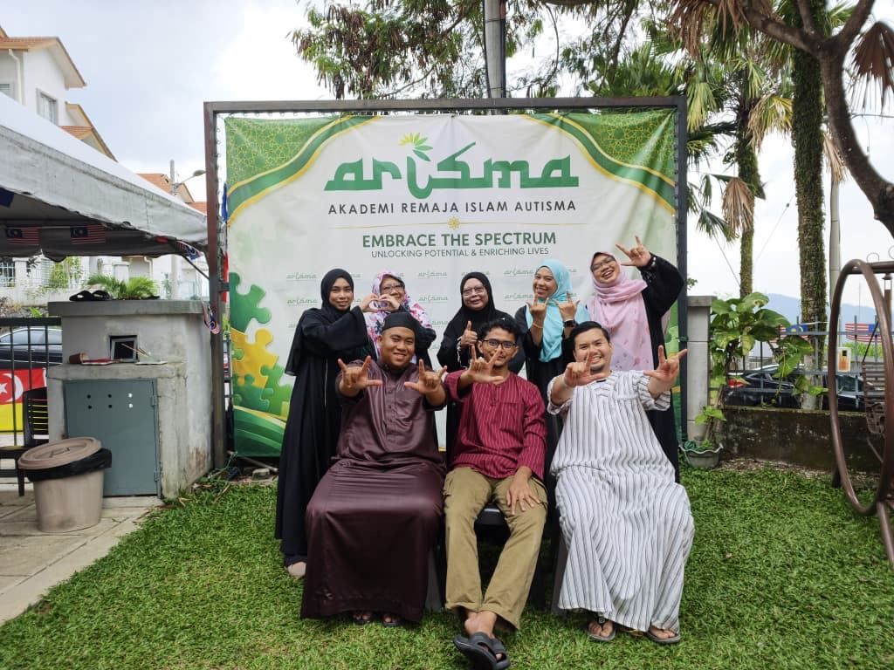
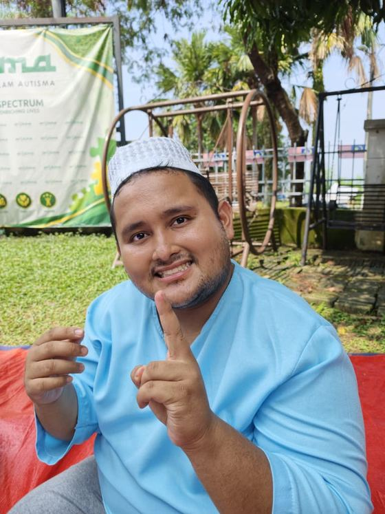
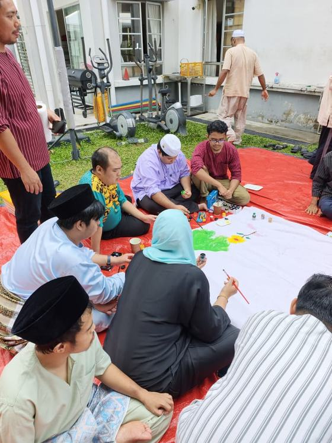
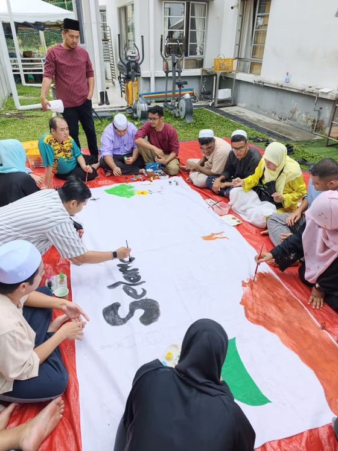
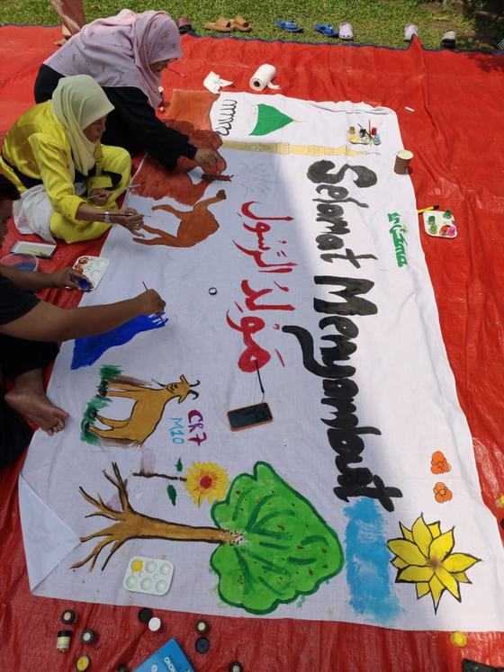
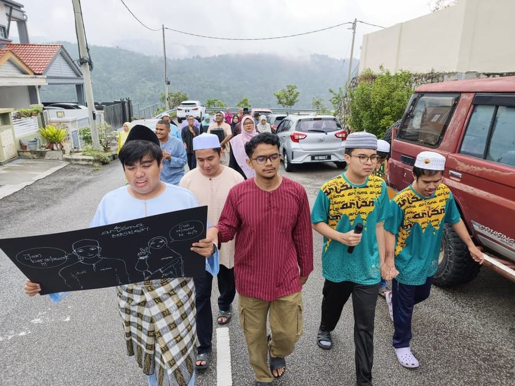
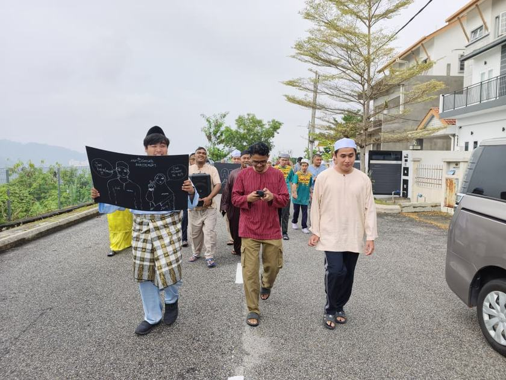

Sheltered Workshop
Ruang kerja terkawal bagi pelatih yang belum bersedia memasuki pasaran pekerjaan terbuka.
Akademi Remaja Islam Autisma · Ukay Perdana, Ampang
ARISMA mengendalikan bengkel terlindung, modul kemahiran kendiri dan latihan vokasional untuk remaja OKU autisme dan masalah pembelajaran. Kami berdiri sebagai jambatan antara alam persekolahan dan alam pekerjaan, dengan nilai Islam sebagai asas pembentukan peribadi.

Tentang kami
Bagi banyak keluarga di Lembah Klang, soalan ini datang tanpa jawapan. Peluang pekerjaan bagi golongan autisme masih terhad, manakala persekitaran yang selamat dan memahami keperluan mereka tidak mudah ditemui.
Yayasan ARISMA ialah badan induk kepada Akademi Remaja Islam Autisma, sebuah pertubuhan bukan berasaskan keuntungan yang berdaftar di bawah Jabatan Perdana Menteri. Kami mengendalikan bengkel terlindung, modul kemahiran kendiri dan latihan vokasional untuk remaja OKU autisme dan masalah pembelajaran, di samping menyediakan biasiswa kepada keluarga yang kurang berkemampuan.
Di mana kami
No 2, Jalan UP 3/7E, Ukay Perdana, 68000 Ampang, Selangor.
Siapa yang kami terima
Remaja dan dewasa OKU autisme serta masalah pembelajaran, dari sekitar Lembah Klang.
Mengenali autisme
Autisme ialah keadaan perkembangan neurologi yang dikenal pasti melalui tingkah laku dan bukan melalui rupa. Kerana itu ia sering tidak disedari oleh orang sekeliling. Ciri dan tahapnya berbeza bagi setiap individu, maka pendekatan yang sesuai bagi seorang pelatih belum tentu sesuai bagi yang lain.
Kurang hubungan mata dan sukar memahami isyarat sosial yang orang lain anggap biasa.
Ada yang lambat atau terhad dalam percakapan, dan memerlukan cara lain untuk menyatakan keperluan.
Rutin yang tetap memberi rasa selamat. Ramai juga kurang peka terhadap bahaya di sekeliling.
Ramai individu autisme memproses rangsangan deria secara berbeza. Bunyi yang kita anggap biasa boleh terasa terlalu kuat sehingga mencetuskan tekanan emosi. Tingkah laku yang kelihatan luar biasa pada pandangan orang lain selalunya merupakan cara mereka mengawal keadaan tersebut.
Program
Program ARISMA dibina mengikut kemampuan setiap pelatih, bukan mengikut kumpulan umur. Kemahiran diulang secara berperingkat di bawah seliaan pembimbing sampai ia menjadi rutin yang boleh dilakukan sendiri.
Ruang kerja terkawal bagi pelatih yang belum bersedia memasuki pasaran pekerjaan terbuka.
Kami mengenal pasti majikan dan memadankan peluang pekerjaan mengikut kebolehan setiap pelatih.
Modul yang dibina khusus untuk keperluan remaja autisme, meliputi pengurusan diri, rutin harian dan tanggungjawab peribadi.
Kemahiran praktikal seperti bercucuk tanam dan kerja tangan, dilatih secara berulang di bawah seliaan pembimbing.
Amalan harian seperti solat, bacaan dan adab diterapkan dalam jadual rutin pelatih.
Perusahaan sosial
Selain latihan, ARISMA menjalankan dua usaha yang melibatkan pelatih secara langsung dalam kerja sebenar. Hasil jualan disalurkan semula kepada program akademi, dan pelatih memperoleh pengalaman bekerja dengan produk yang benar-benar dijual kepada pelanggan.
Pelatih terlibat dalam penyediaan produk makanan ARISMA, daripada penyediaan bahan hingga pembungkusan. Produk dijual melalui Kedai ARISMA.
Projek bercucuk tanam yang mengajar kemahiran agrikultur dan kemahiran kendiri, dan dirancang sebagai sebahagian daripada Desa ARISMA.
Taman Agro ARISMA
Objektif
Untuk siapa
Kedai ARISMA
Produk ini dihasilkan di dapur akademi dengan penglibatan pelatih. Semua pesanan dibungkus dalam bekas kedap udara, dan hasil jualan disalurkan kepada program latihan.
Tempahan pukal untuk hamper, majlis atau cenderamata korporat dialu-alukan.
Impian kami
Desa ARISMA ialah rancangan pusat sehenti yang dibangunkan atas visi “Raudhah Autisme”. Ia akan menempatkan program kemahiran hidup, latihan vokasional dan kediaman dalam satu kawasan, supaya remaja dewasa autisme dapat meneruskan kehidupan berdikari dalam persekitaran yang menyokong.
Kemudahan yang dirancang
Visi dan misi
Visi dan misi ini diambil terus daripada dokumen rasmi Yayasan ARISMA. Kedua-duanya menjadi asas kepada setiap program yang dijalankan di akademi dan kepada rancangan pembinaan Desa ARISMA.
Visi
ARISMA sebagai institusi teraju Islamik yang membina kehidupan remaja OKU autisme yang berdikari dan bermaruah.
Misi
Merealisasikan pusat sehenti Desa ARISMA dalam melunaskan amanah menyediakan peluang pendidikan bermutu, latihan vokasional dan keagamaan untuk golongan remaja OKU autisme.
Warga ARISMA
Akademi dijalankan oleh tenaga pengajar yang mengenali setiap pelatih secara peribadi. Nisbah yang kecil membolehkan bimbingan diberi mengikut kemampuan dan rentak masing-masing.
[isi: bilangan tenaga pengajar sepenuh masa]
Gambar dan nama dipaparkan dengan kebenaran keluarga.

Sukarelawan & lawatan
Kami mengalu-alukan kunjungan daripada universiti, sekolah, masjid, majikan dan organisasi, sama ada untuk khidmat masyarakat, kerjasama program, atau sekadar mengenali pelatih kami dengan lebih dekat.
Sebelum datang
Aktiviti dan acara
Sepanduk sambutan dilukis sendiri oleh pelatih bersama tenaga pengajar dan ibu bapa, sebelum perarakan berselawat di sekitar kawasan akademi di Ukay Perdana.





[isi: acara lain yang ingin dipaparkan — nama acara, tarikh dan gambar]
Pendaftaran
Ceritakan sedikit tentang anak anda dan pasukan kami akan menghubungi anda untuk berbincang langkah seterusnya, termasuk pilihan biasiswa sekiranya diperlukan. Tiada anak yang sama, jadi perbincangan awal ini penting bagi kami memahami keperluan sebenar.
Sumbangan dan biasiswa
Yayasan ARISMA ialah badan induk yang menerima derma am, menanggung biasiswa pelatih dan menguruskan kerjasama CSR. Akaun sumbangan, kod QR dan maklumat penajaan ada di laman Yayasan.
Hubungi
Cara paling cepat ialah WhatsApp. Untuk pertanyaan pendaftaran, hubungi Puan Siti Khadijah terus.